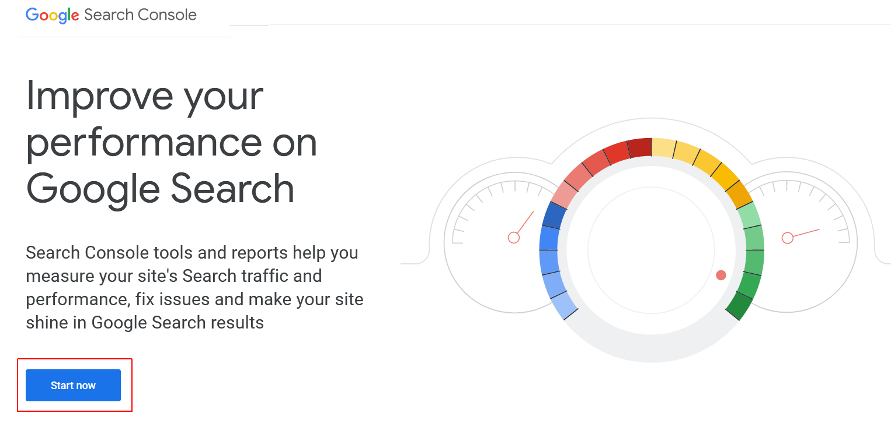
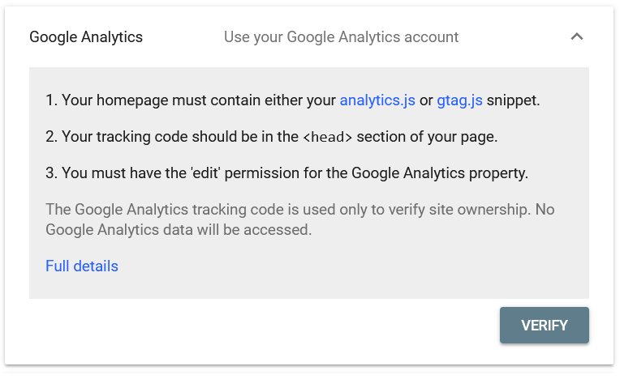
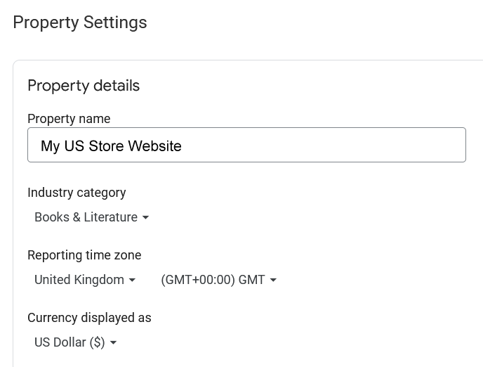
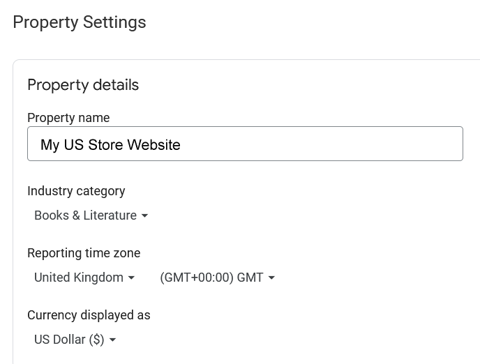
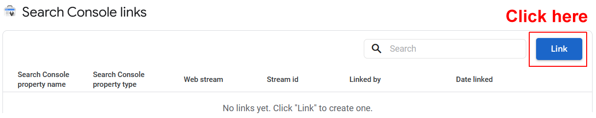
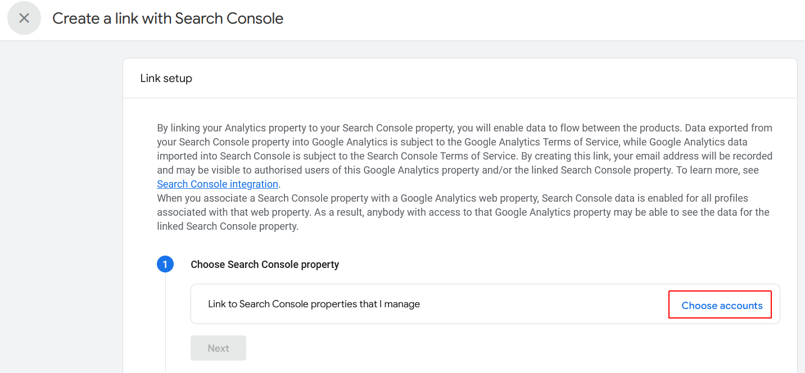
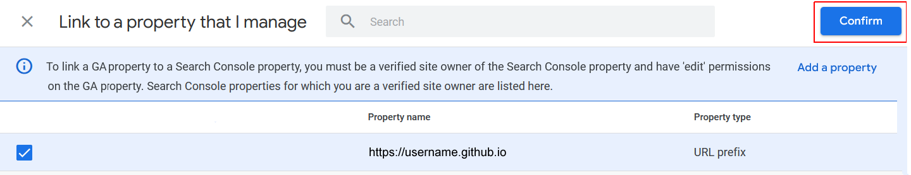
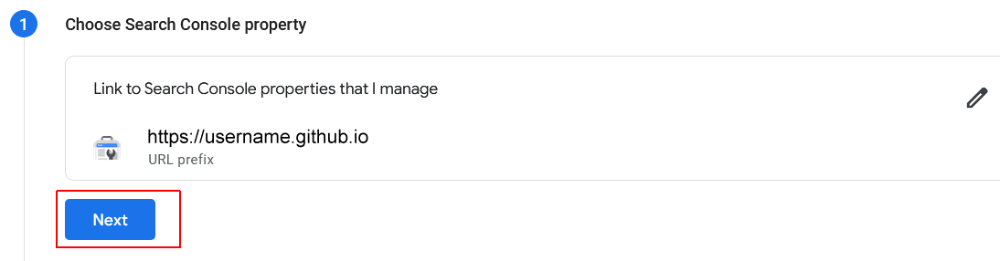
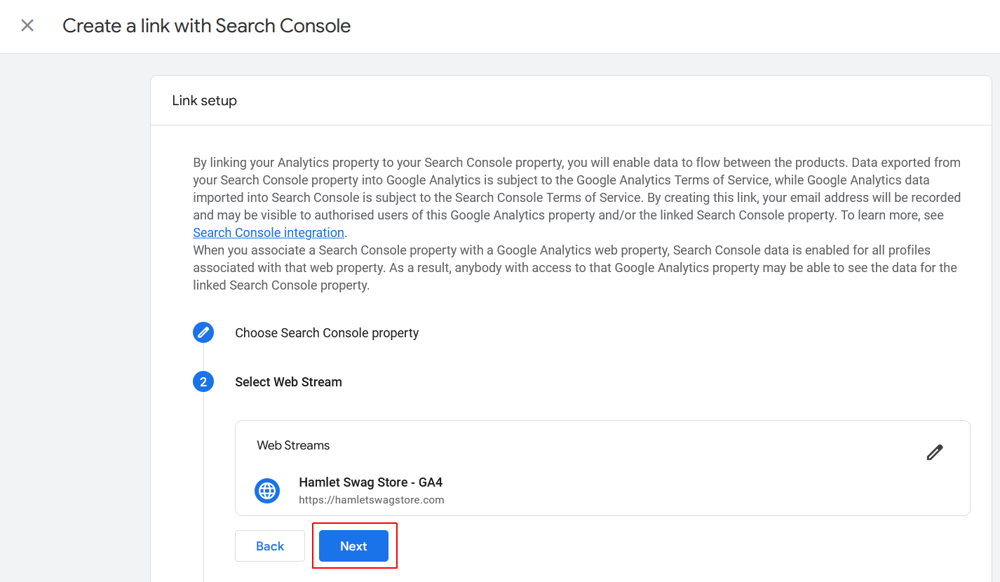
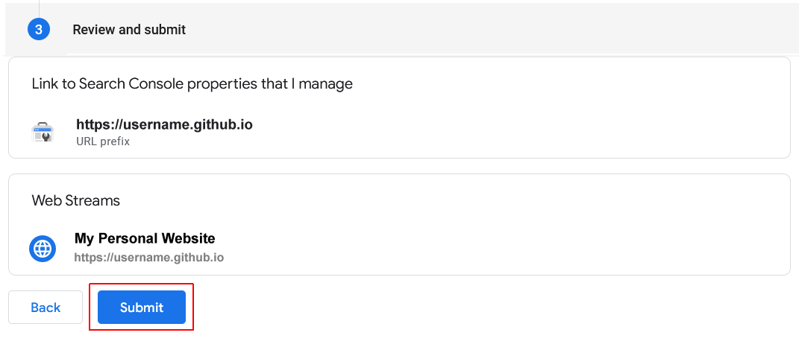

Learning Goals
At the end of this Tutorial you will be able to:
- Add your website to Google Search Console (GSC).
- Create and upload an XML sitemap file.
- Connect GSC to your Google Analytics account.
- Use the various features of GSC to improve your performance on Google search results.
- View detailed reports on your website's traffic, keywords and click-through rates (CTRs).
About Google Search Console (GSC)
Google Search Console is a free tool offered by Google to help website owners monitor and maintain their site’s presence in Google search results.
GSC also alerts you about errors, security issues, and crawling/indexing problems that may affect your website’s search rankings.
Accessing Google Search Console
Follow the steps below to access the Google Search Console:
- Sign into your Google Analytics account. Ensure you have upgraded to the latest version, GA4.
- While signed into Google Analytics, open a new tab in your web browser, and display the Google Search Console home page at the web address below. https://search.google.com/search-console/about 
- Click the Start now button. If you are not automatically signed in, sign into GSC with the same Google Account email and password you used to sign into Google Analytics.
Adding your website to Google Search Console
Follow the steps below to add your website to Google Search Console
- Sign into Google Search Console.
- In a new tab of your web browser, display your Home page live on the Internet.
Right-click on any part of the page that is not an image, and, from the context menu displayed, choose View page source.

- Check that the Google Analytics code is contained inside the <head> of your web page. It should look similar to that shown below.

- Display the Google Search Console screen. If you have not previously added a website, click the + Add property option.
 If you have already added one or more websites, click the dropdown list at the top-left of the screen and select the final option, + Add property.
If you have already added one or more websites, click the dropdown list at the top-left of the screen and select the final option, + Add property. - You are now shown the Select property type dialog box.
 On the right side, in the URL prefix option, enter the address of your website on GitHub, and click the Continue button.
On the right side, in the URL prefix option, enter the address of your website on GitHub, and click the Continue button. - You are now shown the Verify ownership dialog box. Scroll down the list of options and select Google Analytics.

- The dialog box updates as shown below. Click the Verify button. 
- If verification is successful, you will receive the message shown below.
 You can now work with your new website property in Google Search Console.
You can now work with your new website property in Google Search Console.
If verification did not succeed, use the default verification method of uploading the verification text file your account on GitHub.
Connecting GSC to Google Analytics
Connecting Google Search Console to your Google Analytics account helps you analyze search console data in Google Analytics. This provides you with a new perspective on your top-performing content and keywords.
Here are the steps:
- Sign into your Google Analytics account.
- At the bottom-left corner of the main Dashboard screen, click the ‘Admin’ (gears) icon.

- On the next screen displayed, in the second column, click the Property Settings option.
 If Google has automatically linked your Search Console to your Analytics account, you will see a message similar to the following:

If not, continue with the following steps.
If Google has automatically linked your Search Console to your Analytics account, you will see a message similar to the following:

If not, continue with the following steps. - Scroll down the list of options in the second column and click Search Console links.

- Next. click the Link button. 
- A new fly-out dialog box is displayed. Click Choose accounts 
- You will now see a list of the Google Search Console properties (websites) that you have access to. Check the box next to the Search Console property you want to connect, and click the blue Confirm button. 
- Google Analytics GA4 allows you to set up multiple data streams for a single property. In the simplest GA4 configuration, there will only be one data stream. So click Next to continue. 
- Click Select to choose the Web Streams option.

- Typically, there will be only one data stream. Click Choose to select it.

- A new fly-out dialog box is displayed, asking you to confirm your choices. Click Next to continue. 
- A second confirmation screen is displayed. Click the Submit button. 
- After a few seconds, you should see a green Link Created message next to your completed connection..

That’s it. You have successfully connected your Google Search Console data to your Analytics account.
It takes around 24 hours for data from Google Search Console to start appearing in GA4. Additionally, remember that there is up to a 48-hour delay between data collection and display in Google Search Console, and this applies to GSC data in GA4 too. So don’t expect to see any GSC data in reports on today’s or yesterday’s traffic.
Once data starts to appear, the following reports will be available in Google Analytics:
- Landing pages
- Devices
- Countries
- Search queries

These are explained in more detail below.
Landing pages
The first report you will find there is the Landing Pages report.
For each landing page, you’ll see the impressions (number of times a page appeared in search results), clicks, click-through rate (CTR), and average position in the search results. Combined with that page’s analytics parameters like bounce rate, sessions, and pages per session.
Clicking a landing page will show you the actual keywords that brought users to this landing page.

Countries
In the Countries report, you will see countries listed in the same order. This helps in creating content and geolocation marketing campaigns for people from different regions.

Devices
The Devices report will show you how your site performed in desktop, mobile, and tablet search results.

Queries
Next, Queries are the most important of all reports among this data. It shows you which search terms are driving traffic to your site.

Removing a property (website) from GSC
To remove a website from Google Search Analytics:
- Select the website you want to remove from the list of properties at the left of the GSC screen.
- On the next page displayed, near the bottom-left, click the Settings option.
- On the Settings screen, click the Remove property button at the lower-right.
Use URL Inspection Tool in Search Console
The URL Inspection tool in Google Search Console provides information about a page if it’s on Google search results or not.
You can check the status of a page and also request Google to recrawl a page. To start, simply enter a URL in the top search bar.

Google Search Console will then show you the status of the page is indexed by Google. If it’s not indexed, then you’ll see a message saying ‘URL is not on Google.’
You can click the ‘Requesting Indexing’ button and request Google to manually fetch the page from your website.
Besides that, you can scroll down and see more details in the ‘Coverage’ report. It will show information about sitemaps, crawl history, and indexing.

You can also live test a URL and see if there is an indexable version available. If there is, then simply click the ‘Request Indexing’ option.

Removing URLs from Google Search
So far, we have focused on using Search Console to get your content indexed and improve rankings in Google Search. However, sometimes you may want to remove content from Google Search as well.
One way to do this is to add a noindex meta tag to the page you want to remove from search results. However, depending on how often Google crawls your website, this could take some time before your page actually disappears from search results.
Search Console’s Remove URL tool allows you to request a URL to be removed from the search results. Simply click on ‘Removals’ under Index in the menu on your left.

Now click on the ‘New Request’ button, and a popup window will appear. Go ahead and enter the URL you want to remove, select whether you want to remove this URL only or with this prefix, and click the ‘Next’ button.

Google will now block the URL from its search results for about six months. You can add as many URLs as you want and see them in the Removals section in the Search Console.
Adding an XML sitemap
An XML sitemap is a way for website owners to tell search engines about all the pages that exist on their website. It also tells search engines which links on your website are more important than others.
Adding an XML sitemap to your website helps search engines better crawl your website. While it doesn’t give you a boost in search rankings, it can definitely help search engines index your content more efficiently.
Your sitemap web address will look like this:
https://username.github.io/sitemap.xml
Use Sitemaps XML or similar website, copy the file into your 'main' folder and upload it to your GitHub account.
In the Google Search Console dashboard, click on the ‘Sitemaps’ option from the left column. After that, you can paste the URL and click the ‘Submit’ button.

Google Search Console will now check your sitemap and use it to improve your website’s crawling.
Working with search indexing issues
The most helpful feature of Google Search Console is that you can troubleshoot indexing errors.
These errors can affect your search rankings by stopping the search engine from crawling and indexing the pages on your website.
You can easily locate these errors under the Coverage report.
It shows you which pages from your website are indexed by Google and which pages resulted in an error or a warning.

Next, scroll down, and you will see the detailed list of all the errors. Clicking on a link will open the detailed view, where you will also find the link to learn more about the error and how to fix it.
The following are a few common indexing errors you may see:
- 404 error – This error means that the crawler followed a URL and saw a 404 error.
- Server error – This means that your website server timed out or didn’t respond. This could happen if your website were under heavy traffic, was under maintenance, or unavailable for any other reason.
Now let’s take a look at how to fix some of these crawl errors.
Working with 404 errors ('missing pages')
Google lists any 404 errors. For example, you accidentally deleted something or forgot to redirect users to the new updated version.
Simply click on the error in the Index Coverage report, and it will show you all the pages displaying that error. Carefully review the pages and if you see a page that shouldn’t be there, then copy its URL and open it in a new browser window.
If you see a 404 error page in your browser, then this means that you need to fix this page.
Now, if it is a page that no longer exists but you have a newer or similar version of it, then you would want to redirect users to that page.
Using Core Web Vitals in GSC
Google's Core Web Vitals measures how fast your website is and helps the search engine measure your site’s user experience.
In Google Search Console, you can view the ‘Core Web Vitals’ report under the Experience menu on your left. It provides a complete report about your site’s speed score for mobile and desktop.

Using GSC to improve mobile usability
Nearly 63% of all Google searches in the United States come from mobile devices. That’s why Google gives an SEO bump to mobile-friendly websites in the search results.
Google has a Mobile-Friendly test tool that allows you to quickly examine a page. The Mobile Usability report in Search Console tells you how Google sees your entire website in mobile performance.

If you see errors on this page, then this means that these issues may affect your site’s rankings.
To see the affected pages, you can scroll down to the Details section and click on the error.

Adding Users to Access Google Search Console
If you have a marketing team or you have hired someone to help you with SEO, then those users may need access to Google search console data.
Search Console allows you to easily add users and give them access to view all reports without sharing your Google account credentials with them.
To add a new user, simply click on the Settings » Users and permissions option under Property settings and then click on ‘Add User’ button.

Next, you need to provide the user’s valid Google account email address and select permission to grant them.

There are two types of permission levels. The full permission level will give them access to everything, including the ability to add new users. Restricted permissions will allow them to view the data but not add new users.
After choosing a permission level, click on the ‘Add’ button to save your changes.
The user you added will now receive an email notification, so they can login and view Google Search Console data for your website.